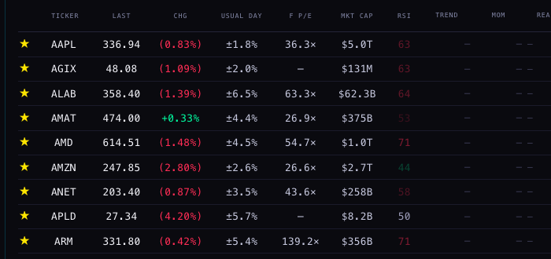
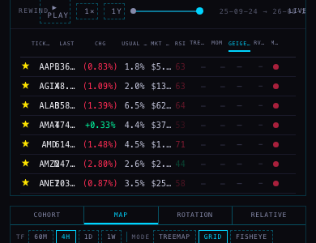
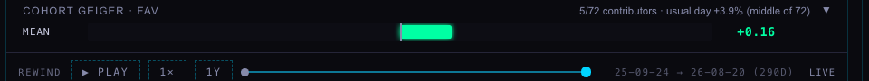
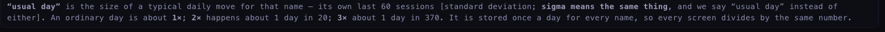

SCINTILLA · THE USUAL DAY — EVERY NAME’S HEARTBEAT, STORED AND SHOWN
24 SEP 2026 · LANE M52
You said: “Normally we move five percent a day. Measured how? Okay,
that’s an important metric. That seems to me like a range of a normal day-to-day heartbeat. That’s
important to track everywhere. I don’t think I have that on the hub much, which means I don’t have it on
the database, which means we don’t use it at all.” You were right on all three counts. The number was
being worked out and thrown away every time it was used. It is now measured one way, stored once a day, and read by
every screen that needs it.
1 · WHAT A “USUAL DAY” IS
A name’s usual day is the size of a typical daily move for that name. Take its closing price each
day, work out how far it moved from the day before as a percentage, then ask how far from flat those moves usually
land. That spread is the usual day, written ±1.8%.
It is not the average of the moves. Up days and down days would cancel out and almost every name would
average near zero. It is the typical size of a move, ignoring direction — which is what you actually
want when you ask “is today big for this name?”
SIGMA, STANDARD DEVIATION, USUAL DAY
You asked what the difference is between sigma and standard deviation. There is none.
Sigma is simply the symbol mathematicians write for standard deviation — one is the name, the other is the
shorthand. The measurement is “how far from average things usually land”, and when it is applied to a
name’s daily moves we call it the usual day. The hub says “usual day” everywhere and never
asks you to learn a Greek letter.
THREE LENGTHS, BECAUSE ONE NUMBER CANNOT ANSWER TWO QUESTIONS
“Is this name calm?” and “is this name calmer than it normally is?” need different
windows, so each name stores three:
STORED AS
OVER
WHAT IT ANSWERS
usual_day_20
20 sessions
Right now — about a trading month.
usual_day_60
60 sessions
The season. This is the one the screens show, because it is the window the scintilla rules already judge a move by — so the column and the strip can never disagree.
usual_day_250
250 sessions
The year. Reading the 20 against the 250 is how you see a name that has gone quiet, or woken up.
atr_pct_14
14 days
The whole day’s travel — the overnight gap and the wicks included — as a percentage of price. A quiet close can hide a wild day; this is what catches it.
A window with fewer than 20 sessions behind it is stored empty, never as zero. Zero would read as
“this name does not move”, which is a lie about a new listing. The screen shows a dash instead.
2 · WHERE THE NUMBERS COME FROM
The bars: the chart API’s own daily candles for every name it serves — 364 today,
including the non-equities it carries such as SPY, QQQ, GLD and TLT.
The sum: one small file of arithmetic, heartbeat.mjs, shared by the nightly job and the
backfill by import, so the two cannot drift apart. The spread it uses is the same form the scintilla detector uses,
and a test compares them directly.
The store: a new table, ticker_heartbeat_daily, one row per name per trading date.
The screens: read that table. The hub works out no spread of its own — a test checks that
too, because two definitions of one number is how a hub starts disagreeing with itself.
THE TABLE, AND HOW MANY ROWS IT HOLDS
COLUMN
WHAT IT HOLDS
ticker, date
Together they are the key, so running the job twice updates a day rather than doubling it.
usual_day_20 / _60 / _250
The three windows above, as percentages (1.45 means ±1.45% a day). Empty where the history is too short.
atr_pct_14
Whole-day range, including gaps, as a percentage.
n
How many daily moves stood behind the longest window — how you know a “250-session” number is not 30 days wearing a year’s label.
source, version, computed_at
Which feed, which formula, and when. A later change to the sum is visible instead of silent.
WHAT RUNS
WHEN
ROWS
The nightly job (heartbeat-daily)
23:10 UTC, weekdays — 19:10 New York, after the close
up to 364, one per served name
The two-year backfill (heartbeat-backfill.mjs)
Once, by the coordinator
about 183,800 — 364 names × 505 dates
Those counts are measured, not guessed: a dry run over eight names produced 4,040 rows — 505 per
name for 504 trading dates — with no failures. Nothing has been written yet. The migration, its
rollback and the schedule are written and waiting for the coordinator to apply; until then every screen shows a dash
where a stored number will be.
WHY THE BACKFILL MATTERS
Storing today’s heartbeat only tells you how much a name moves. Storing two years of them
lets the hub ask the more useful question: is this name calmer or wilder than its own normal? That question
needs the heartbeat to have a history of its own.
3 · WHERE IT SHOWS, AND WHICH WINDOW EACH ONE USES

The board at 1680. A new column, USUAL DAY, sits immediately after CHG — because
“down 0.83%” means nothing until you know Apple normally moves ±1.8%. Every value is real,
computed from the chart API’s daily bars: AAPL ±1.8%, ALAB ±6.5%, APLD ±5.7%, AXTI
±10.3%. It is the 60-session window, monochrome like every other stored number on the board.

The same board at 390 (phone). The change reads in full — (0.83%), (1.39%), +0.33% —
and so does the usual day: 1.8%, 6.5%, 4.4%. To make room, two columns step aside at phone width: F P/E and
READ. Both were already unreadable there (F P/E printed “36…”; READ is the words version
of TREND and MOM, which keep their numbers). The ± sign goes too, so the decimal survives.The company bar. The same number beside the price it explains: usual ±1.8%. On a
day that is genuinely unusual it gains the multiple — “3.3× today” — in the daily
up or down colour.

The cohort. A group’s heartbeat is the middle name’s, not the average: one
wild name in forty would drag an average somewhere no member actually lives. It always says how many names it was
taken over — here “middle of 72”.

The words, under the scintilla strip. Said once: what a usual day is, that sigma means the same
thing, and that it is stored once a day so every screen divides by the same number.
SURFACE
WINDOW
WHY THAT ONE
Board column and company bar
60 sessions
The season — steady enough not to jump about, recent enough to be about this name now. It is also the window the scintilla rules use, so the column and the strip agree by construction.
The tooltip on either
20, 60, 250 and ATR%
“Calmer than its own normal” is a comparison, so hovering gives both ends of it, plus the whole-day range.
Cohort header
60 sessions, median
The middle name of the group, with the count it was taken over.
Today’s scintillas
60 sessions, stored
The detector now divides by the stored number instead of working out its own, and each stored scintilla records which it used.
4 · THREE NAMES, AND WHAT THEIR HEARTBEATS SAY
Measured from the chart API on the session of 23 September 2026:
NAME
20 SESSIONS (NOW)
60 SESSIONS (SEASON)
250 SESSIONS (YEAR)
WHOLE DAY (ATR%)
THAT DAY’S MOVE
MCD — McDonald’s
±1.50%
±1.45%
±1.22%
1.93%
−4.81% — 3.3× its usual day
BYND — Beyond Meat
±5.05%
±5.71%
±15.11%
7.69%
−12.86% — 2.3× its usual day
NVDA — Nvidia
±2.86%
±2.50%
±2.39%
2.49%
−1.47% — 0.6×, an ordinary day
This is the whole point of the metric. McDonald’s fell 4.8% and Beyond Meat fell 12.9% — yet
the McDonald’s day was the more unusual of the two: 3.3 times its own normal against 2.3. A raw
percentage would have ranked them the other way round, and been wrong.
BYND is a name that has calmed down. Its year says ±15.1% a day; its last month says
±5.1% — a third of its own normal. Something changed for it, and only a stored history of the
heartbeat shows that.
MCD travels further than its closes admit. Its whole-day range is 1.93% against a ±1.45%
close-to-close day: about a third more movement inside the day than the closing price reports.
NVDA is steady at every length (±2.9, 2.5, 2.4), and its whole-day range is the same size as its
usual day — a name that moves and then stays there.
5 · WHAT COULD BE WRONG
Nothing is stored yet. The migration and the schedule need applying. Until then every surface shows a
dash, which is the honest answer, not a broken one.
A spread assumes the past resembles the present. A name that has just changed — a takeover, a halt,
a collapse — keeps a usual day built from the name it used to be. That is why the 20-session and 250-session
numbers sit beside it instead of one figure pretending to be the truth.
Rare days are rarer in this arithmetic than in real markets. “3× is about 1 day in 370”
is how these numbers behave if moves are spread evenly around flat. Real markets have more wild days than that, so
treat the odds as a rough guide, not a probability.
A stale heartbeat is possible. If the nightly job stops, a screen could show a number computed weeks ago.
The hub reads only rows from the last three weeks, dims anything older than a week, and always states the date it
was computed for — but it cannot fix a stopped writer.
Splits and dividends are whatever the chart API’s daily bars say they are. If a bar is unadjusted,
the move it implies is wrong, and so is the heartbeat built on it.
The backfill computes each past date from the bars that existed on that date, so an old row is what the
history actually said then. A bar the provider corrects later will change that number if the backfill is run again
— the computed_at and version columns exist so that is visible.
The screenshots are from a local review copy, not from the live site. The table does not exist yet, so
the harness answered those reads with rows computed by the same file the nightly job will use, from the same chart
API. That API only accepts scintillahub.ai as an origin, so it was proxied through the local server. Both facts are
stated here rather than hidden.
6 · WHAT WAS NOT DONE
Nothing was deployed, pushed, scheduled or written to any database. The migration, the rollback and the
schedule are files for the coordinator to apply.
The treemap tiles do not carry a heartbeat. The map paints its names into 76-pixel canvas tiles that
already hold a ticker and a percentage; a third number would not be legible there. The cohort header carries the
group’s figure instead. The tree itself is still a proposal in another lane (deliverables/20260924/tree), so there is no tree room in this build of the hub to put a heartbeat into; when it is built, the same stored number and the same median rule are ready for it.
Crypto is not covered beyond what the chart API’s universe serves, and it does not list BTCUSD
today. The rules file treats crypto separately, and its heartbeat should be read against its own class.
No existing number, weight, colour or saved setting was changed. The Equalizer, the scintilla rules and
every calculation already on the board are untouched.